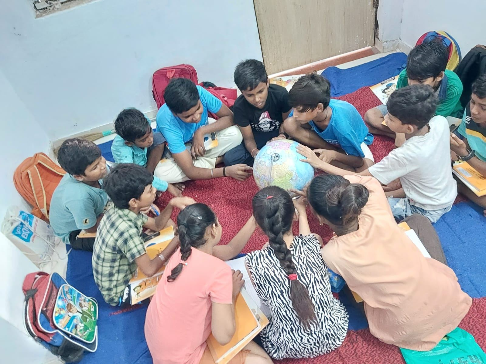
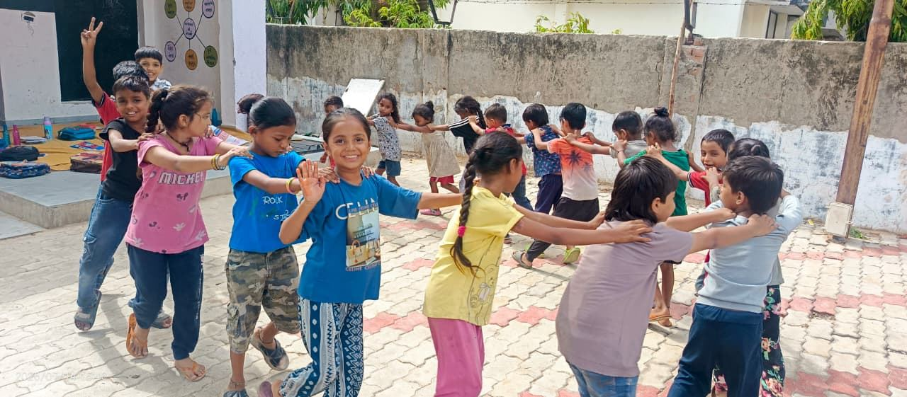
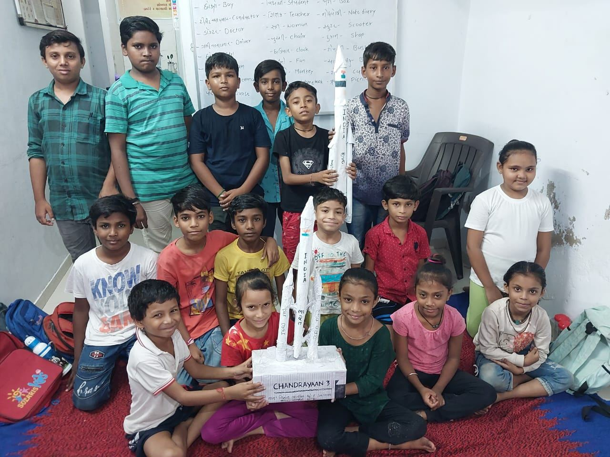

Education
Our survey of 5265 households of Valmiki community found that 13 % of children are dropped out from mainstream schools in age group of 6 to 14 years, 49 % of children never attended or completed 10th grade and only 4 % young person have reached at graduation. There is lack of culture of education among Valmiki community and parents are not able to provide extra coaching to their children at home or outside due to illiteracy and poverty. Learning level and quality of education among children of Valmiki community is very poor. Thus, foundational literacy, numeracy and science remain very poor resulting in early drop outs from primary schools and most of the students never qualify in 10th board exam. In absence of alternate livelihood options and easy availability of cleaning work in unorganized sector, youth end up in caste-based and traditional occupation of manual scavenging, unsafe cleaning work. Valmiki community never comes out of this cycle and always remains at last in all indicators of human development and human well-being.
Over the period, we have realized that to break this cycle, strong foundational numeracy, literacy and science among children at early ages is much needed.
Vision of Education program is to strengthen foundational learning among children of Valmiki community so that they continue their mainstream education for overall development and growth.
To achieve our vision, we run community-based education centres within the localities for children studying in grade 1 to 5. These centres strengthen foundational skills of literacy, numeracy, science through activity-based learning. Our centres provide 2 hours extra coaching daily. Pre-test and post-test are carried out to assess learning outcomes. We have developed & compiled activity-based teaching learning material – TLMs.
Since inception of the initiative, 4,324 children enrolled in schools and 4,560 children studied in our community education centres.
Currently, we run 9 Education Support Centres for children studying in grade 1 to 5 in Ahmedabad city, Khambhat, Petlad & Sojitra towns of Anand district. 160 children are enrolled and regularly attend in these centres in academic year 2026-27.
Annual cost of per child is Rs. 5,500/-